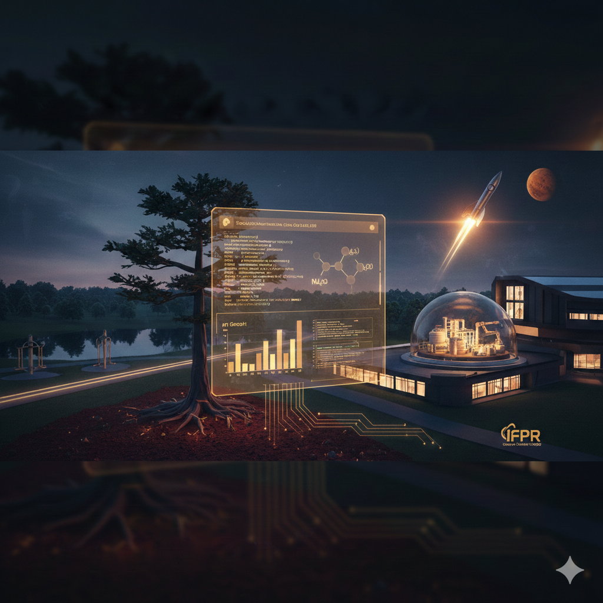
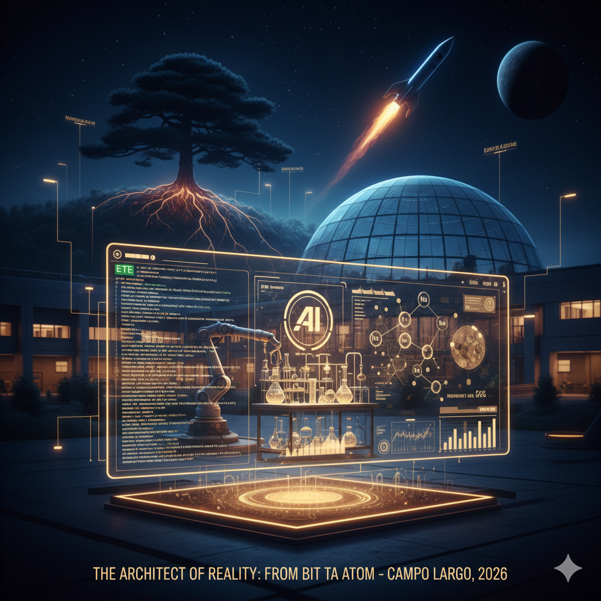
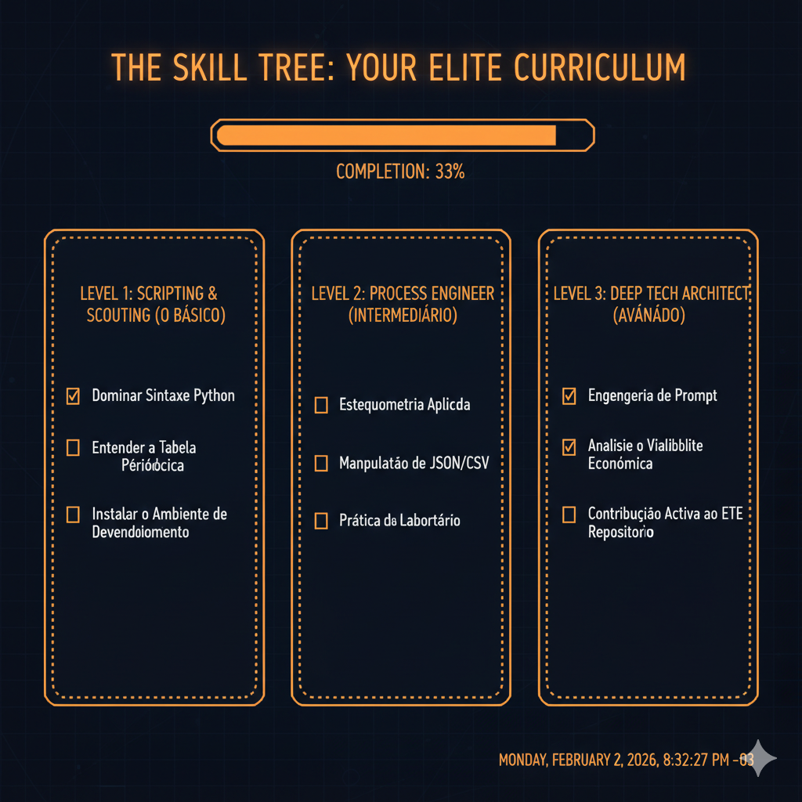

De Campo Largo para Marte: Sua Jornada em Materiais
A terra vermelha que você pisa no Parque Newton Puppi esconde segredos químicos que o resto do mundo importa da China. Você pode ser o cara que vai programar o refino disso.

IFPR — O instituto no futuro.
Três pilares — Código, Matéria, Futuro
- O Código. Python não é só script: é a linguagem que liga termodinâmica (Kps, pH, precipitação) a decisões de investimento. Um simulador que você roda no IFPR hoje pode virar planta amanhã.
- A Matéria. Rochas e cerâmicas de Campo Largo fazem do município um laboratório a céu aberto. A herança mineral que a região carrega é o mesmo tipo de insumo que alimenta semicondutores e ímãs de neodímio — bilhões em mercado global.
- O Futuro. O IFPR é o lugar onde o código vira matéria física: onde você aprende a não só simular, mas a conectar engenharia de processos ao chão de fábrica e ao refino real.
O mindset 2025/2026 — Conhecimento técnico é o cheat code
Soberania Digital vs. Atômica
Quem controla o código controla o software. Quem controla as terras raras controla o hardware do planeta.
Todo chip, toda bateria de Tesla, todo ímã de neodímio: depende de lantanídeos. Sem eles, não há iPhone, não há turbina eólica, não há motor elétrico. A China domina a cadeia não por ser “melhor em código” — domina porque domina a matéria-prima. Você aprender a refinar aqui é aprender a não depender de quem segura a torneira.
Ouro 4.0 & Economia Espacial
O solo de Campo Largo é o mesmo tipo de jogo que a NASA e a SpaceX enxergam em asteroides.
Lantanídeos na Terra = lantanídeos em rochas espaciais. Quem entende Kps, pH e precipitação seletiva aqui entende a geologia de outros mundos. A mineração de asteroides não é ficção: é engenharia de processos que você já pode simular no IFPR. O cara que domina o refino hoje está escrevendo o manual de quem vai minerar em Marte.
IA + Bancada de Lab
O que levava 10 anos agora leva 10 dias. A IA é o copiloto; você ainda pilota.
Ferramentas como o Cursor (e modelos que preveem propriedades de materiais) estão acelerando a descoberta de ligas e rotas de refino. Você não substitui o laboratório — você usa IA para priorizar quais experimentos fazer. Menos tentativa e erro, mais impacto. Quem junta código + química + IA vira o recurso escasso que as indústrias disputam.
Geopolítica de Quintal
Campo Largo é estrategicamente mais importante que muitas capitais.
Rochas, cerâmicas, tradição mineral. O que parece “interior” é na verdade um nó da cadeia global de materiais críticos. Quem domina o refino local não pede licença para sentar na mesa: as empresas e os governos vêm até você. Um jovem de 16 anos que entende terras raras + Python já fala a língua que CEOs e ministérios de mineração precisam. O futuro não espera diploma — espera quem sabe fazer.
A Janela do Visionário — O fim da tela, o início da matéria
O mundo saturou de aplicativos e softwares. A próxima fronteira de riqueza e inovação é a Engenharia de Materiais impulsionada por IA.

O Arquiteto da Realidade.
Engenharia de Prompt para a Natureza
Não peça para a IA escrever um poema; peça para ela encontrar a rota química mais curta para isolar o Neodímio do solo de Campo Largo.
A IA que você usa para código pode otimizar reações, prever rendimentos e sugerir sequências de extração. O prompt certo vira protocolo de laboratório.
O Laboratório Automatizado
Imagine rodar 1.000 simulações no projeto ETE antes de gastar um único grama de reagente no laboratório do IFPR. Isso é eficiência de nível 1 (Type 1 Civilization).
Simulação em massa + validação pontual. Menos desperdício, mais descobertas. O laboratório físico vira o lugar onde você confirma o que o código já previu.
Riqueza Geracional
Sistemas de software depreciam; patentes de novos processos químicos e materiais avançados valem fortunas por décadas. Ouro 4.0 é sobre construir ativos reais.
O conhecimento que você gera em rotas de refino, ligas e cerâmicas de alto desempenho vira patrimônio intelectual que indústrias e países disputam.
A Ponte IFPR–Mundo
O campus local é sua base de lançamentos. O código que você escreve em Campo Largo hoje é o padrão industrial que o mundo usará em 2030.
IFPR não é ponto de chegada — é plataforma. Publicar no ETE, falar em eventos, colaborar com indústria: você escala impacto sem sair da raiz.
Timeline do Futuro
Manifesto do Visionário
Não construímos mais só telas. Construímos matéria que importa: rotas de refino, ligas, cerâmicas, processos que o mundo vai usar. O código é a ferramenta; a riqueza está no que ele permite extrair e transformar. Ouro 4.0 é o compromisso de quem escolhe o laboratório e a engenharia de materiais como fronteira — em Campo Largo, no IFPR, hoje.
The Blueprint
A grade curricular do IFPR vista como treinamento para a Jornada Marte.
| Na Grade | Na Realidade |
|---|---|
| Química Inorgânica | Extração de Lantanídeos e Neodímio |
| Informática / Algoritmos | Automação do Simulador ETE em Python |
| Físico-Química | Termodinâmica de Reatores para o Ouro 4.0 |
O Oráculo
Preveja o futuro financeiro e químico de um projeto minerário em Campo Largo.
The "What-If" Engine
E se a argila do bairro tal tivesse 2% mais de Lantânio? O Simulador ETE recalcula sua margem de lucro em milissegundos.
Alimente o sistema com dados reais do solo: repositório ETE — CSV, JSON e dados de entrada.
$ caminho das pedras — IFPR + ETE
# Primeiro script — massa de óxido a partir do volume de lixívia (lógica ETE)
# ETE — Primeiro cálculo: massa de óxido a partir do volume de lixívia
# Lógica simplificada do simulador (ex.: refino / PLS)
volume_lixivia_m3 = 1.0 # m³ de solução lixiviada (PLS)
concentracao_oxido_g_L = 2.5 # g/L de óxido na lixívia
volume_L = volume_lixivia_m3 * 1000
massa_oxido_kg = (concentracao_oxido_g_L * volume_L) / 1000
print(f"Volume lixívia: {volume_lixivia_m3} m³")
print(f"Massa de óxido: {massa_oxido_kg:.3f} kg")# Checklist de Carreira (O RoadMap)
- Setup: Instalar VS Code + Extensão Python.
- Exploração: Visitar o laboratório de Química do IFPR Campo Largo.
- Contribuição: Abrir sua primeira Issue ou Pull Request no repositório chmulato/caracore-ete-releases.
The Skill Tree: Sua Progressão de Elite
Checklist interativo por níveis de proficiência. Seu progresso é salvo no navegador.

Nível 1: Scripting & Scouting O Básico
Nível 2: Process Engineer Intermediário
Nível 3: Deep Tech Architect Avançado
Download Central — Dashboard de Controle
Versão estável do simulador Minerador 4.0, validada por testes automatizados e publicada no GitHub Releases.
Arquivo .exe e checksum MD5 disponíveis na página do Release.
Artefatos de Confiança
- Cálculos validados via PyTest (
tests/test_engine.py) - Pipeline GitHub Actions: testes → PyInstaller → Release
- MD5 Checksum disponível no Release para verificação de integridade
Chamada para ação
Estude no IFPR. Contribua com o repositório ETE. Seja quem transforma a terra vermelha em soberania tecnológica — linha de código e reação química de cada vez.

Inspirado pela Excelência: O Legado Pawlowsky
Este laboratório digital e a visão do Ouro 4.0 são dedicados ao Prof. Urivald Pawlowsky, Professor Titular da UFPR e referência em Engenharia de Recursos Hídricos e Ambiental. Sua trajetória prova que a ciência de alto nível nasce da união entre o rigor técnico e a paixão pelo nosso território.
A engenharia não transforma apenas a matéria; ela garante a soberania e o futuro do nosso ambiente.
Os alunos podem perguntar à IA ou ao mentor: - Quem foi o Prof. Urivald Pawlowsky na UFPR?